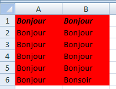

Accès aux fonctionnalités d’EXCEL depuis VBA
Exercices
Exercice 1
Ecrire les instructions qui permettent de faire référence à la cellule B2 dans la deuxième feuille de calcul de nom Feuil2 du classeur Test_Macro.xls et qui lui affectent le valeur 4
Il faut bien faire attention à comment sont imbriqués les objets. D'abord le classeur (Workbooks), ensuite la feuille de calcul (Worksheets) et enfin la cellule (Range).
Hide
Sub macro_reference_cellule()
Workbooks("TEST-MACRO.xls").Worksheets("Feuil2").Range("B2").Value = 4
End Sub
Hide
Exercice 2
Ecrire l’instruction qui permet d’affecter la valeur de la cellule B2 de la deuxième feuille de calcul du classeur TEST_MACRO.XLS à la cellule active.
Il faut aller chercher la valeur de la cellule B2 de la feuille Feuil2 du classeur TEST_MACRO.XLS de la même manière que dans l'exercice 1 pour l'affecter à la cellule active.
Hide
Sub macro_affectation()
ActiveCell.Value = Workbooks("TEST-MACRO.xls").Worksheets("Feuil2").Range("B2").Value
End Sub
Hide
Exercice 3
Ecrire une macro qui permet de calculer la surface d’un rectangle (hauteur*largeur) à partir des valeurs contenues dans les cellules A1 et B1 de la deuxième feuille de calcul. Le résultat sera écrit dans la cellule C1 de la première feuille de calcul.
En une seule ligne, il faut affecter à la cellule C1 de la première feuille le produit des valeurs des cellules A1 et B1 de la deuxième feuille.
Hide
Sub macro_surface_rectangle()
Workbooks("TEST-MACRO.xls").Worksheets("Feuil1").Range("C1").Value = Workbooks("TEST-MACRO.xls").Worksheets("Feuil2").Range("A1").Value * Workbooks("TEST-MACRO.xls").Worksheets("Feuil2").Range("B1").Value
End Sub
Hide
Exercice 4
Expliquer ce que fait la macro suivante :
Sub macro_selection()
Range("A1:B6").Select
Selection.Font.Bold = True
Selection.Value = "Bonjour"
End Sub
Compléter cette macro pour que Bonsoir soit écrit dans la cellule B6, que toutes les cellules renseignées soient colorées en rouge et que le texte de la première ligne soit en gras et en italique.

L'instruction pour colorer l'intérieur d'une cellule sélectionnée est : Selection.Interior.Color = 255
L'instruction pour mettre en gras : Selection.Font.Bold
L'instruction pour mettre en italique : Selection.Font.Italic = True
Hide
Cette macro écrit "Bonjour" en gras dans les cellules A1 à A6 et B1 à B6.
Sub macro_selection()
Range("A1:B6").Select
Selection.Value = "Bonjour"
Selection.Interior.Color = 255
Range("A1:B1").Select
Selection.Font.Italic = True
Selection.Font.Bold = True
Range("B6").Select
Selection.Value = "Bonsoir"
End Sub
Hide
Félicitations, vous avez terminé les exercices de ce chapitre.
Vous pouvez passer au chapitre suivant en cliquant sur
ce lien ou sur la flèche droite en dessous. Vous pouvez également retourner sur le chapitre en cours en cliquant sur la flèche gauche.